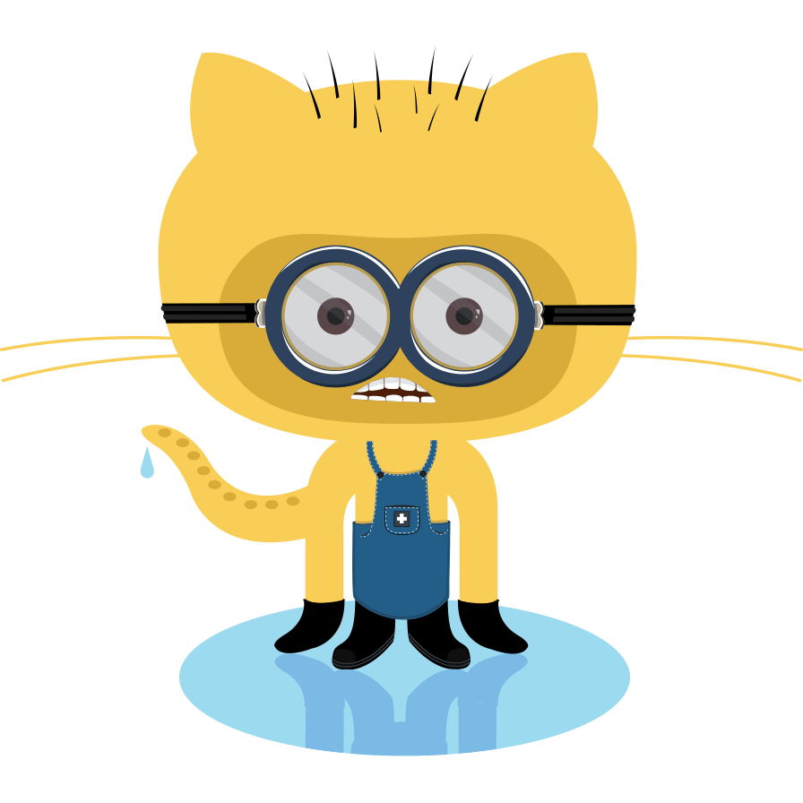

在開始之前，先來考考大家—
Git 和 GitHub 的冷知識，你能回答得出幾個?
-
Git 的作者是誰？ 答案
- (A) 一個英國黑客
- (B) Linux 之父
- (C) 微軟創辦人
-
GitHub 的吉祥物其實不是貓!? 答案
-
GitHub 的 404 頁面有神祕彩蛋!? 答案
-
你知道 Git 其實是很中二的命名方式嗎？ 答案
-
GitHub 把全世界的程式碼 冷凍 起來了！這是怎麼回事？ 答案
什麼是 Git？
Git 是一個「版本控制系統」。
它的主要功能是在你的電腦上記錄、管理專案的所有修改歷史，就像為每一份檔案做備份。
- 可以追蹤程式碼改了什麼、什麼時候改的、誰改的
- 每次改動都被記錄下來，一點都不會漏掉
- 不小心寫壞也不用怕，一鍵回到過去
把 Git 想像成「你自己電腦上的時光機」，可以隨時回到以前的版本。
什麼是 GitHub？
GitHub 是一個「線上的程式碼託管平台」。
它讓你可以把自己電腦上的 Git 專案「推送（push）」到網路上，
方便多人協作、備份、開源分享。
- 讓團隊成員一起開發專案
- 能線上審查（review）、討論、管理任務
- 就算電腦壞了，雲端也有備份
GitHub 像是「放你時光機記錄的所有版本的雲端資料庫」，你也能邀請朋友一起來看、一起改。
Git 與 GitHub 的關係
| Git | GitHub | |
|---|---|---|
| 定位 | 版本控制工具（軟體） | 雲端協作平台（網站、服務） |
| 作用 | 追蹤/記錄本地檔案的所有變更 | 存放 Git 專案、多人協作與分享 |
| 使用地點 | 自己的電腦 | 網路（cloud） |
| 需不需要網路 | 不一定，離線也能用 | 需要網路 |
| 互動方式 | 指令操作（git init, commit） | 介面/網站操作，也有 API |
| 例子 | git commit, git status |
Pull request、Issue、Actions |
Git 負責管理你電腦上的程式碼歷史紀錄，GitHub 則是讓大家能在雲端一起同步、討論與展示這些變動。
-
沒有 GitHub 也能用 Git，但團隊協作、遠端備份會很麻煩。 (就像你上課寫筆記，想要跟朋友共用、備份、共寫，就一定要放到雲端（比如 Google 雲端硬碟、Notion、GitHub）才能一起修改)
-
其實還有 GitLab、Bitbucket 等其他雲端平台，但 GitHub 最有名。
❓常見問題 Q&A
Q1. GitHub 是不是等於 Git？
不是！Git 是版本控制工具，GitHub 是雲端平台。你可以只學 Git，不用 GitHub；但用 GitHub 前一定要會 Git。
Q2. 一定要用 GitHub 嗎？
不用，可以選擇 GitLab、Bitbucket…等類似服務，甚至只用 Git 管理本地專案也沒問題。但現今多數開源和團隊專案都用 GitHub。
Q3. 不會 Git 可以直接用 GitHub 嗎？
不行。GitHub 的核心運作還是基於 Git 指令（commit、push、pull 等），所以要先懂 Git。
Q4. 實際開發流程長怎樣？
- 在本地用 Git 版本控制（init、add、commit）
- 用 GitHub 當「遠端倉庫」（push 上去，團隊 pull 下來一起改）
- 團隊協作、Code Review 都在 GitHub 平台完成
冷知識解答區
1. Git 的作者到底是誰？
答案是 (B) Linux 之父 Linus Torvalds！
Linus Torvalds（Linux 之父）原本是為了管理 Linux 核心原始碼才開發出 Git，他認為當時沒有免費且好用的版本控制工具，乾脆自己寫一套，他在 2005 年只花了兩週就寫出 Git。
2. GitHub 的吉祥物其實不是貓!?
其實 Octocat 是一隻結合章魚（Octopus）和貓（Cat）的超可愛生物！想看所有 Octocat 的造型可以直接逛Octodex 官網。
3. GitHub 的 404 頁面有彩蛋？
沒錯~ 只要在瀏覽器進入一個不存在的 GitHub 網址，
例如：
github.com/this-page-does-not-exist
404 頁面就會出現可愛的章魚貓，圖案經常變換，有時還能看到特殊主題（如節日、紀念日）限定插圖。

4. 「Git」的名字很中二？
真的，Linus 在剛釋出的 Git 的 README 檔案中寫道：
- git 是隨便挑的發音簡單的三個字母，沒有特別意義。至於它是不是 “get” 的發音錯誤，倒也不重要。
- git 在英文可指「蠢蛋」、「討人厭的傢伙」、「白癡」，你隨便從字典裡挑一個定義吧！
- 如果心情好時，他會把 git 當成 “global information tracker” (全球訊息追蹤器)。
- 當 git 壞掉時，他會把 git 罵成 “goddamn idiotic truckload of sh*t” (一堆爛屎)。
5. GitHub 將全世界的 code 冷凍起來了？
沒錯！GitHub 把所有2020 年 2 月 2 日前還 active 的開源專案，全部燒錄成 188 捲特製膠片，放在 北極程式碼庫（Arctic Code Vault）裡，希望能保存 1000 年。
只要你的程式碼有被 GitHub 收錄進北極備份，GitHub 就會在你的個人頁面加上一個「Arctic Code Vault」徽章，代表你也是人類文明備份的一份子！
總結
- Git = 版本控制工具，讓你管理自己電腦上的程式碼歷史
- GitHub = 雲端平台，讓你把 Git 專案放到網路上，方便備份、多人協作
- Git 是基礎，GitHub 讓協作和分享變簡單
腦力激盪
- 你平常有備份檔案的習慣嗎？如果是團隊合作，怎麼確保大家都用同一份檔案？
- 你覺得本地 Git 和雲端 GitHub 最大的差別是什麼？